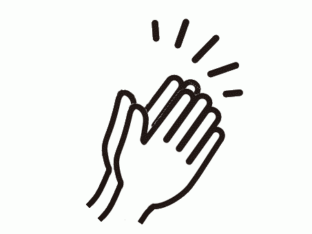

かならずお読みください→
障害のない方もこどもではない方もどうぞご自由にお使いください
もうすぐ卒業式や入学式の季節になります。
このような式典では、みんなで拍手する機会がおおくなります。 さて、『みんな』といっても中には拍手していない人やできない人もいるかもしれません。ひとにはそれぞれ事情があるものですから、なかにはみんな一緒にお祝いしたいとか拍手したいと思っているひともいるかもしれません。
今回は、そんな人も一緒に拍手できるかもしれないという話です。
画面をタップ（クリック）すると、５秒間拍手の動画が動き、拍手の音がでます。音の大きさはお使いの機械の音量調整でできます。
下のリンクをクリックするとはじまります。
拍手するおもちゃ
拍手するおもちゃは、このままでもお使いになれますが、インターネットが通じないところでは使えません。このまましばらくするとインストールしますか？ときいてきます。インストールすると、ホーム画面にアイコンが表示され、インターネットが使えない場所（例えばwifiの届かない体育館など）でも使えるようになります。
インストールの案内が出ないときは、Chromeの場合『メニュー』から『ホーム画面に追加する』を選んでもインストールできます。（他のブラウザでは若干異なります）
式典などではタイミングよく拍手するところがポイントになります。はじめのうちはとなりのひとが拍手したら一緒に拍手するようにすればいいでしょう。
以前ご紹介した、しろいいぬのおもちゃで遊べるひとなら、この拍手するおもちゃも動かすことができるでしょう。というのは、拍手のおもちゃはしろいいぬのおもちゃを改造して作ったものだからです。
まず最初に、いぬがこちらを見ている画像の代わりに手を開いている画像を入れました。そしてしっぽを振り上げて口を開けている画像の代わりに、拍手しているアニメ画像を入れました。そして犬の鳴き声の音声の代わりに、拍手の音声をいれました。これでタップを終了するとすぐに拍手のアニメ画像がとまり、しばらく拍手の音が続きます。これでは変ですので、タップが終わったあと5秒間、アニメ画像が動き続けるようにひと工夫しました。
このように見えているものと聞こえているものがちがうだけで、その他のほとんどは同じですから改造作業は簡単でした。でもアイデアと目的と用途はかなり違います。使った人も違うものを感じるだろうと思います。
その気があるなら拍手できなくても、拍手みたいなことはできるかもしれないというお話でした。いかがだったでしょうか。
でもやっぱり自分の手で拍手できることは大切だと思う方もいるでしょう。それとも拍手できなくても気持ちが伝わればいいと思う方もいるでしょう。その人その人がそれでいいと思われるのなら、どちらも間違っていないと私は思います。
その人がどんなふうに他の人と関わり合いたいと思っているかは、周囲の人にはなかなかわからないこともよくあります。実際に話が好きな人も嫌いな人もいます。話が嫌いでも一緒に拍手するのはかまわないかもしれません。そんな人の役に立ってくれればそれで幸いです。
以前紹介したしろいいぬのおもちゃは、自分だけで楽しむようにつくりました。今回の拍手するおもちゃは、みんなと一緒に拍手できるようにとつくりました。ここがちょっとちがいます。こんな具合にできることをすこしづつ増やしていけたらいいなと思っています。
また今どきの卒業式や入学式では、ご両親のほかご高齢の方々の姿もよく見かけます。ご時世ですね。もしかして不自由のため拍手が思うようにいかないとお困りでしたら、こちらを試してみてはいかがでしょうか。たしかにこの拍手は本物ではありません。ですがその方のお気持ちが本物なら、少し変わっていても心配ないんじゃないかと思いますがいかがでしょうか。
そしてまたみなさんも経験があると思いますが、ねむたーーーくなる講演会や研修会ってありますよね。でもそんな講演でも終わったときは、やれやれ終わったかとみんな拍手します。このようにまわりの人といっしょに拍手することはやっぱりたいせつなことなんだと思います。
2023/01/20 公開
研究企画課リハ工学科にもどる
←もくじはこちらです